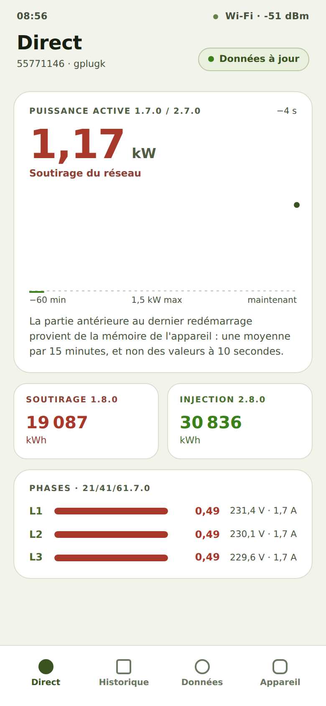
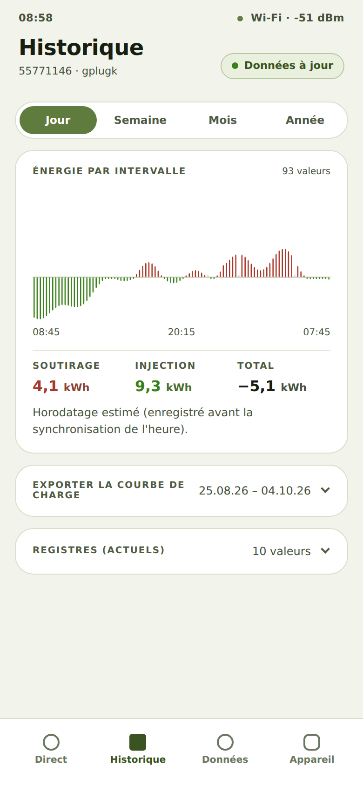
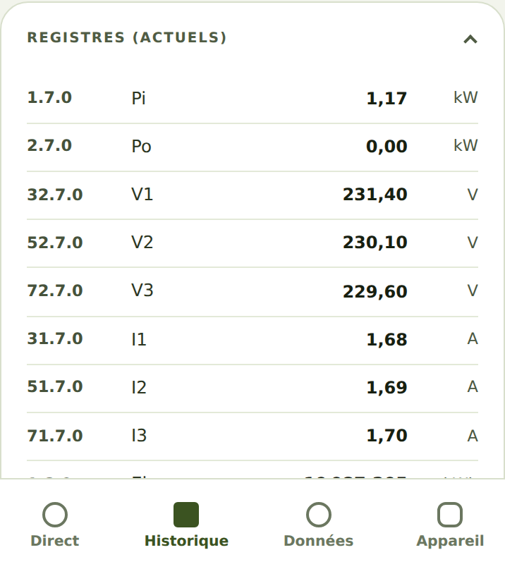
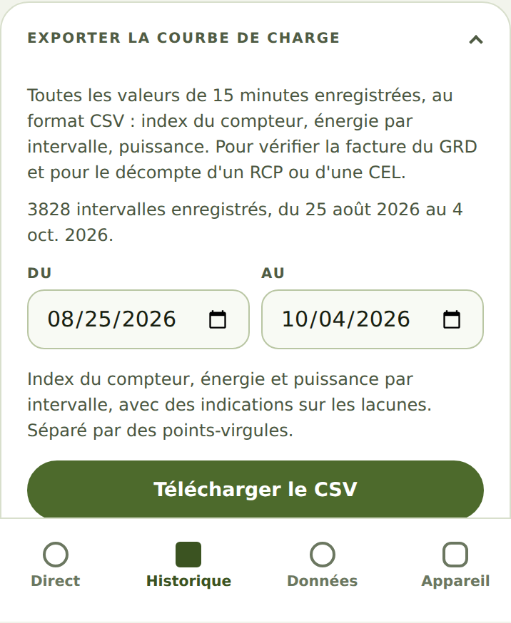
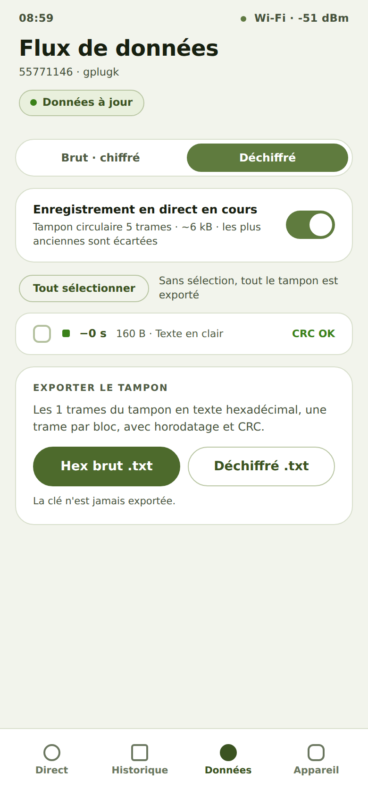

En tant que propriétaire d'un gPlug, je veux voir d'un coup d'œil combien d'électricité je soutire ou
j'injecte en ce moment, afin de comprendre ma consommation.
Comment faire
Ouvrez l'adresse du gPlug. L'application démarre sur l'onglet Direct.
En haut figure la Puissance active 1.7.0 / 2.7.0 en kW avec son sens : Soutirage du réseau ou
Injection dans le réseau.
Le graphique en dessous montre la dernière heure (−60 min à maintenant). Touchez ou survolez
le graphique pour lire un instant précis.
Les cartes Soutirage 1.8.0 et Injection 2.8.0 affichent les index en kWh, tels que le compteur
les affiche.
Avec les profils triphasés, Phases · 21/41/61.7.0 affiche la puissance, la tension et le courant par phase.

Vue en direct avec puissance, index et phases
Comment savoir que cela a fonctionné
Données à jour s'affiche en haut à droite ; les valeurs se mettent à jour toutes les quelques
secondes.
Les index correspondent à l'affichage du compteur.
Remarques
Après un redémarrage du gPlug, la partie du graphique antérieure au redémarrage provient de la
mémoire de l'appareil (une moyenne par 15 minutes).
Vérifié avec le simulateur d'appareil le 30 septembre 2026. Vérifié sur du matériel réel : gPlugK 2026-09-14.
En tant que propriétaire d'un gPlug, je veux voir combien d'énergie j'ai soutirée et injectée sur un
jour, une semaine, un mois ou une année, afin de comparer des périodes.
Comment faire
Touchez Historique en bas.
Choisissez la période en haut : Jour, Semaine, Mois ou
Année.
Le graphique Énergie par intervalle montre le soutirage vers le haut et l'injection vers le bas.
En dessous figurent les totaux Soutirage, Injection et Total.

Historique d'une journée avec les totaux
Touchez Registres (actuels) pour voir toutes les valeurs actuelles du compteur avec leur code OBIS.

Liste des registres actuels
Comment savoir que cela a fonctionné
Chaque période affiche un graphique et les trois totaux.
Total correspond au soutirage moins l'injection.
Remarques
Le gPlug enregistre une valeur toutes les 15 minutes. Il en conserve environ une année, y compris
après un redémarrage ou une mise à jour du micrologiciel.
Horodatage estimé (enregistré avant la synchronisation de l'heure). apparaît lorsque des valeurs ont été enregistrées avant que le gPlug ait reçu
l'heure depuis internet.
Vérifié avec le simulateur d'appareil le 30 septembre 2026.
En tant que propriétaire d'un gPlug, je veux télécharger les valeurs quart-horaires enregistrées sous
forme de fichier, afin de vérifier ma facture d'électricité ou de faire le décompte dans un
regroupement pour la consommation propre.
Comment faire
Touchez Historique et ouvrez la carte Exporter la courbe de charge. Même fermée, sa ligne indique la
période enregistrée.
Choisissez Du et Au.
Touchez Télécharger le CSV.

Exporter la courbe de charge
Comment savoir que cela a fonctionné
Le navigateur enregistre un fichier CSV avec les index, l'énergie et la puissance par quart
d'heure, séparés par des points-virgules.
Si Du est après Au, « Du » doit précéder « Au ». s'affiche et rien n'est téléchargé.
Remarques
Tout exporter, y compris les intervalles sans horodatage inclut aussi les intervalles sans horodatage.
Vérifié avec le simulateur d'appareil le 30 septembre 2026.
En tant que propriétaire d'un gPlug intéressé par la technique, je veux voir les données que le
compteur envoie réellement, afin de montrer ce qui arrive en cas de problème.
Comment faire
Touchez Données en bas. Vous voyez les dernières trames avec leur heure et CRC OK
ou CRC FAIL.
Choisissez la vue en haut : pour les compteurs chiffrés Brut · chiffré ou Déchiffré,
pour les compteurs DSMR Hex ou Texte en clair.
L'interrupteur Enregistrement en direct en cours fige l'affichage pour lire tranquillement ; le gPlug continue
d'enregistrer.
Touchez une trame pour l'ouvrir ; elle propose Copier et Trame en .txt.
Cochez des trames ou touchez Tout sélectionner et téléchargez-les dans la carte
Exporter la sélection.

Flux de données avec les dernières trames
Comment savoir que cela a fonctionné
Une trame copiée ou enregistrée contient les octets en texte hexadécimal avec horodatage et CRC.
Remarques
La clé n'est jamais exportée.
Vérifié avec le simulateur d'appareil le 30 septembre 2026.